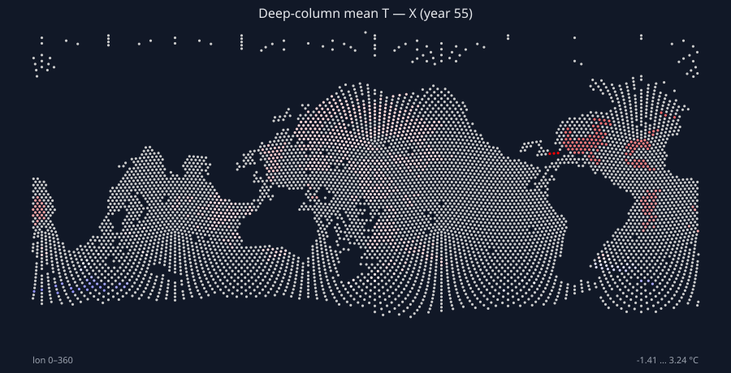
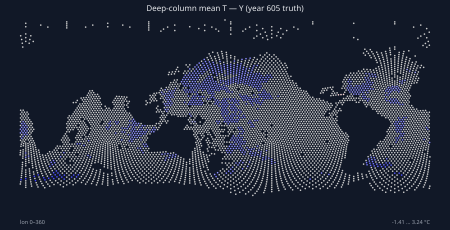
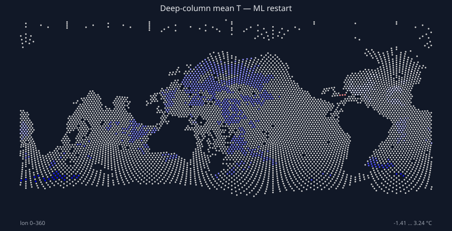
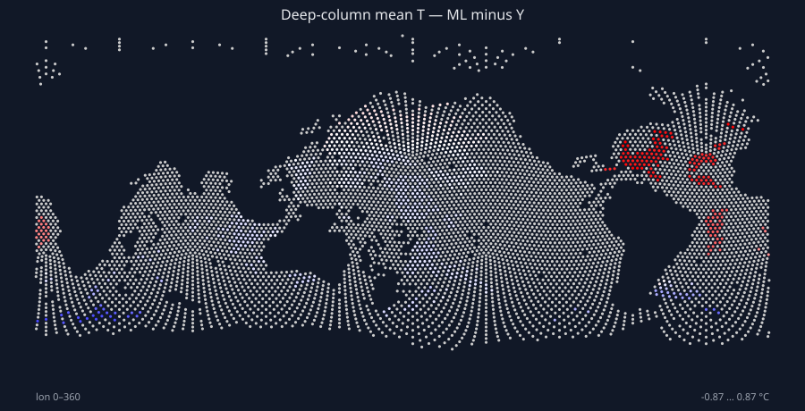
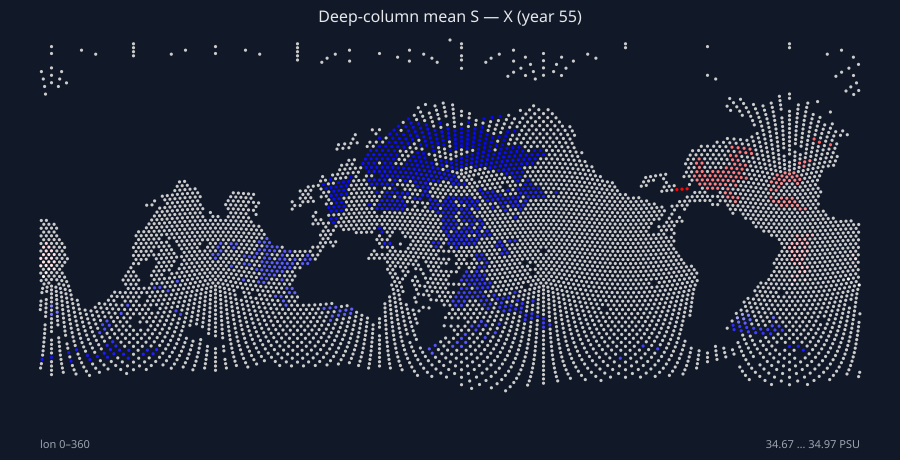
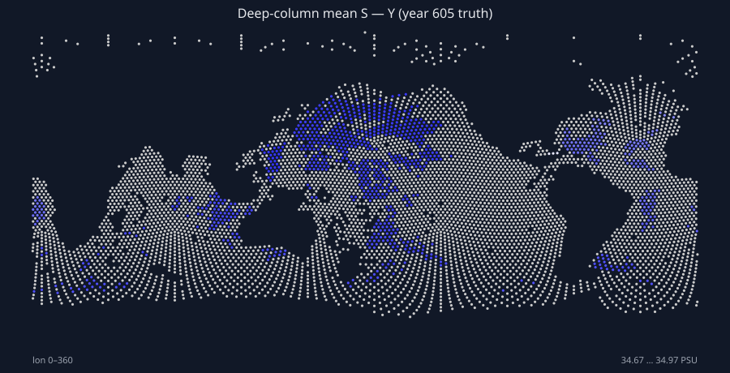
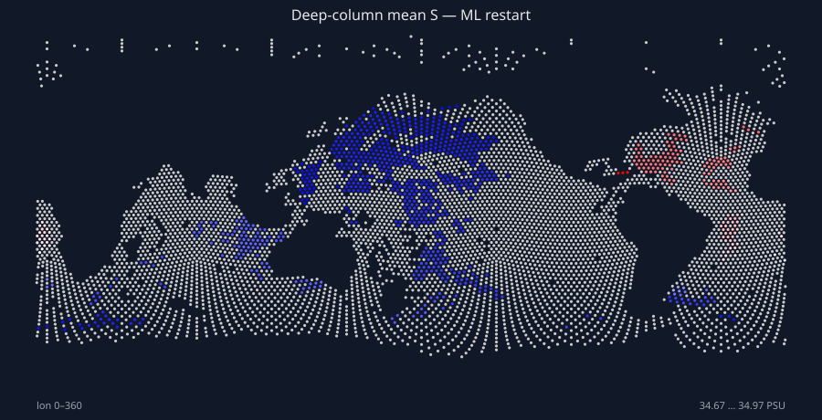
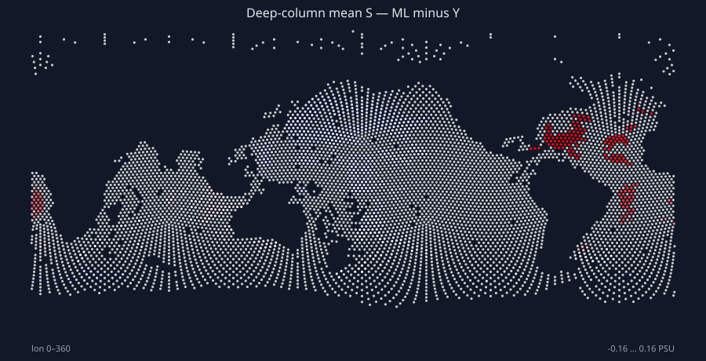

Branch handoff/prototype-e2e · 10 September 2026
Map a year-~50 QU240 restart to deep T/S at year ~600, and write a legal MPAS restart.
Not a weather model. Not GenCast. Prototype first, then the team takes over.
github.com/daliwang/AI4MPAS · checkout handoff/prototype-e2e
| In git (review this) | Not in git |
|---|---|
oceanai/ workflow + GNN + writeback | 19 GB Kang raw dump |
| Tutorials 00–06 | data/processed/ working tensors |
| X vs ML vs Y snapshot (T and S maps) | 57 MB *.ml.nc files |
| AI-ready pack recipe (~113 MB tar on Lustre) | Checkpoints / .venv |
main still has old notes and PPTX. Take over from this branch.
Case v3.GMPAS-NYF_QU240 · python -m oceanai.run_prototype --stage all
| Stage | What happens |
|---|---|
| prepare | 60 pairs, deep mask k=46…60, cell graph, monthly NYF, scalers |
| qc | Restart OHC vs history AM (sanity) |
| baseline | Persistence: predict Y = X |
| truth-writeback | Put Y deep T/S into the X template — proves the writer |
| train | Residual GraphSAGE on 48 train graphs |
| infer | Write rst.0055-01-01.ml.nc |
| snapshot | python -m oceanai.qc.snapshot → X vs ML vs Y |
Other GPU cluster: copy the 113 MB pack, not the 19 GB dump.
| Item | Prototype choice |
|---|---|
| Mesh | QU240, 7153 cells, graph from cellsOnCell (41 018 edges) |
| Deep mask | refBottomDepth > 2000 m → k = 46…60 (15 levels) |
| Net | Cell-only residual GraphSAGE, 6 layers, hidden 64 |
| Node input | 15 T + 15 S + 7 static + 10 monthly NYF = 47 |
| Target | Residual ΔT, ΔS on 15 deep levels (z-scored; add back to X) |
| Loss | Huber, weights areaCell × layerThickness |
| Split | Train 48 (51–54→601–604) / holdout 12 (55→605) |
| Hardware | Login-node CPU for the published demo |
NYF cycles; one namelist. F and θ are encoded but not causal on this set.
Restart names. History activeTracers_* are not used.
| Field | v1 role |
|---|---|
temperature k=46…60 | Predict ΔT, add to X |
salinity k=46…60 | Predict ΔS, add to X |
| T / S k=1…45 (shallow) | Copy X |
layerThickness | Copy X |
normalVelocity + barotropic | Copy X |
Mesh, xtime | Copy X (early date) |
No ssh in the restart — do not invent it.
0055-01 (X) vs ML restart vs 0605-01 (Y) · deep, area×thickness weighted
| Metric | X (persist) | ML | Y (truth) |
|---|---|---|---|
| Mean deep T (°C) | 1.45 | 0.10 | 0.075 |
| Deep T RMSE vs Y (°C) | 1.43 | 0.39 | — |
| Deep T bias this−Y (°C) | +1.37 | +0.03 | — |
| Mean deep S | 34.736 | 34.726 | 34.714 |
| Deep S RMSE vs Y | 0.073 | 0.069 | — |
| OHC 2000 m–bot rel. err. vs Y | 0.43% | 0.065% | — |
| Shallow T/S, h, velocity vs X | — | 0 (copy) | — |
T skill is large-scale cooling. S 550-yr change is small — do not over-claim salinity.
Same color scale. Late ocean is colder; ML follows Y, not X.




Same layout as T. Global mean X 34.74 → Y 34.71; RMSE 0.073 → 0.069.




| # | Use when you… |
|---|---|
| 00 | Need vocabulary (X, Y, deep, persistence) |
| 01 | Are on Frontier — smoke run |
| 02 | Move tensors to another GPU cluster |
| 03 | Touch restart writeback |
| 04 | Own OHC / RMSE |
| 05 | Will run N-day MPAS (recipe only) |
| 06 | Review the X / ML / Y snapshot |
Index: tutorials/README.md
| Person | Owns next |
|---|---|
| Olawale | Pair factory, scalers, training loop |
| Alice | OHC maps, holdout interpretation |
| Hyun | N-day forward from *.ml.nc |
| Dali | Advisor; restart contract |
Do not train GenCast on 60 NYF pairs. Do not interpolate T/S to lat–lon. Do not write history tracers into a restart.
git checkout handoff/prototype-e2e # Frontier python -m oceanai.run_prototype --stage all --smoke python -m oceanai.qc.snapshot # Other cluster export OCEANAI_PROCESSED=/path/to/QU240 python -m oceanai.data.pack_aiready --verify-only
Then: tutorials/00-concepts.md and prototype/snapshots/0055-01/compare.md.